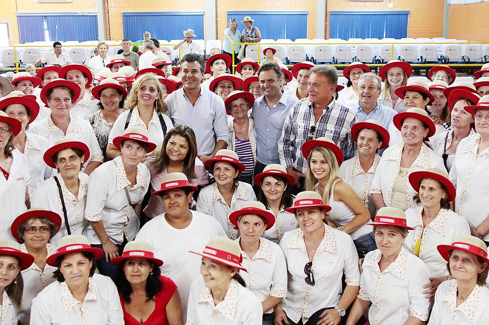

O que apresenta?
Qual a conexão entre o campo e a cidade?
Mostra o quanto a vida urbana necessita da vida rural, e a rural necessita da vida urbana. Como por exemplo, a vida rural apresenta alimentos a cidade. E a urbana apresenta a economia global, a tecnologia. Lá eles mostram como funciona, ajudam entender melhor, e você vê o quão importante é as duas área.
Um pouco sobre a Coopavel
O Show Rural Coopavel tem o propósito de difundir conhecimentos, tecnologia e oportunidades para toda a cadeia do agronegócio. São cincos dias de evento, mais de 600 expositores preparados para você se preocupar apenas em aprender e fazer bons negócios.

O que ela apresenta?
- Máquinas e implementos agrícolas;
- Sementes e insumos de alto desempenho;
- Soluções sustentável para o campo;
- Demonstração em campo;
- Feiras de agronegócios;
- Espaço temáticos e Educacionais;
- Integração do campo cidade.
A Coopavel transforma o conhecimento e a produção rural em celebração, conjunto, educação, traca de experiência, promovendo respeito e valorização de ambas partes.
Fonte: showrural.com.br
 Fonte: Aécio Neves - Show Rural Coopavel - 03/02/2014Link Show Rural: https://showrural.com.br/